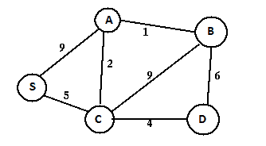
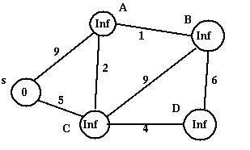
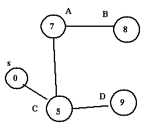
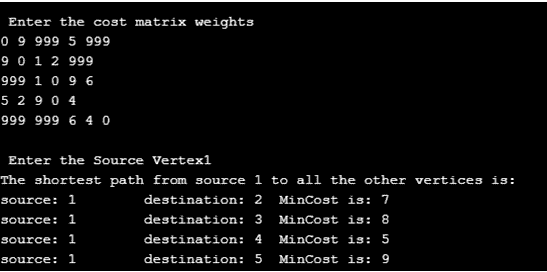
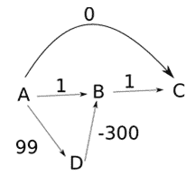

迪克斯特拉算法
原文：https://www.studytonight.com/data-structures/dijkstras-algorithm
迪杰斯特拉的算法发表于 1959 年，以其发现者埃德格·迪杰斯特拉的名字命名，他是一名荷兰计算机科学家。该算法旨在寻找具有非负边权重的有向或无向图中的最短路径。
在我们研究这个算法的细节之前，让我们先简单了解一下以下内容:
- 图:图是定义为 G=(V，E)的非线性数据结构，其中 V 是顶点的有限集合，E 是边的有限集合，使得每条边都是连接任意两个顶点的直线或圆弧。
- 加权图:这是一种特殊类型的图，其中每条边都被赋予一个数值，称为权重
- 连通图:这类图中每对顶点之间都存在一条路径
- 图 G 的生成树是一个子图 G ’,它包括 G 的所有顶点，这些顶点与最小数量的边相连。因此，对于具有 n 个顶点的图 G，生成树 G’将具有 n 个顶点和最大 n-1 条边。
问题陈述
给定一个加权图 G，目标是找到从给定源顶点到 G 的所有其他顶点的最短路径。该图具有以下特征-
- 顶点集
V - 加权边组
E，使得(q,r)表示顶点 q 和 r 之间的边，成本(q，r)表示其权重
迪克斯特拉算法:
- 这是一种单源最短路径算法，旨在找到给定问题陈述的解决方案
- 该算法适用于有向图和无向图
- 它只适用于连通图
- 该图不应包含负边权重
- 该算法主要遵循贪心方法寻找局部最优解。但是，它也使用动态规划方法来构建全局最优解，因为先前的解被存储并进一步添加，以获得到源顶点的最终距离
- 该算法的主要逻辑基于以下公式-
dist[r]=min(dist[r], dist[q]+cost[q][r])
该公式规定，当且仅当dist[q]+cost[q][r] is less than dist[r]的值为时，与顶点 q 相邻的距离顶点 r 将被更新。这里
- dist 是一个一维数组，它在每一步跟踪从源顶点到所有其他顶点的最短距离，并且
- 成本是一个二维数组，表示图的成本邻接矩阵
- 这个公式同时使用了贪心和动态方法。贪心方法用于寻找最小距离值，而动态方法用于组合先前的解( dist[q] 已经被计算并用于计算 dist[r] )
算法-
Input Data-
- 图 G 的成本邻接矩阵，比如成本
- 源顶点，比如 s
Output Data-
- 从 s 到 G 中所有其他顶点的最短路径的生成树
以下是寻找解决方案的步骤-
第一步；Set dist[s]=0，S=ϕ // s 是源顶点，s 是包含所有访问顶点的一维数组
第二步:对于除 s 之外的所有节点 v，设置 dist[v]= ∞
第三步:找到 q 不在 S，这样 dist[q]最小//顶点 q 不应该被访问
步骤 4 :将 q 添加到 S //将顶点 q 添加到 S，因为它现在已经被访问过了
第 5 步:更新与 q 相邻的所有 r 的距离【r】，使得 r 不在 S 中//不应访问顶点 r dist[r]=min(dist[r], dist[q]+cost[q][r]) //贪心和动态方法
第 6 步:重复第 3 步到第 5 步，直到所有节点都在 S //中，重复，直到所有顶点都被访问过
第 7 步:打印从源顶点 u 到所有其他顶点的最短路径的数组距离
第 8 步:退出
让我们试着用下面的例子来理解这个算法的工作原理
图 1:输入图(加权和连通)
给定上述加权连通图和源顶点 s，以下步骤用于寻找表示 s 和所有其他顶点之间最短路径的树-
步骤 A -使用以下算法步骤初始化距离数组–
步骤 1 -设置 dist[s]=0，S=ϕ // u 是源顶点，s 是具有所有访问顶点的一维数组
步骤 2 -对于除 s 之外的所有节点 v，设置 dist[v]=∠
| 访问顶点集 | S | A | B | C | D | | | Zero | ∞ | ∞ | ∞ | ∞ |
图 2:初始化 dist[]后的图形
步骤 B - a)选择源顶点 s，因为距离[s]最小，s 不在 s 中
第 3 步 -发现 q 不在 S 中，这样 dist[q]最小//不应访问顶点
通过将其添加到 S 来访问 S
步骤 4 -将 q 添加到 S //将顶点 q 添加到 S，因为它现在已经被访问过了
步骤 c) 对于所有尚未被访问(不在 S 中)的 S 的相邻顶点，即 A 和 C，使用以下算法步骤更新距离数组-
第 5 步 -更新与 q 相邻的所有 r 的距离【r】，使得 r 不在 S 中//不应访问顶点 r dist[r]=min(dist[r], dist[q]+cost[q][r]) //贪心和动态方法
dist[A]= min(dist[A], dist[s]+cost(s, A)) = min(∞, 0+9) = 9
dist[C] = min(dist[C], dist[s]+cost(s, C)) = min(∞, 0+5) = 5
因此 dist[]更新如下-
| 访问顶点集 | S | A | B | C | D | | [s] | Zero | nine | ∞ | five | ∞ |
步骤 C -重复步骤 B
- 选择并访问顶点 C，因为它没有被访问过(不在 S 中)，距离[C]是最小的
- 更新 C 的相邻顶点(即 A、B 和 D)的距离数组
第 6 步 -重复第 3 步到第 5 步，直到所有节点都在 S
dist[A]=min(dist[A], dist[C]+cost(C,A)) = min(9, 5+2)= 7
dist[B]= min(dist[B], dist[C]+cost(C,B)) = min(∞, 5+9)= 14
dist[D]= min(dist[D], dist[C]+cost(C,D))= min((∞,5+4)=9
这将更新 dist[]如下-
| 访问顶点集 | S | A | B | C | D | | [s] | Zero | nine | ∞ | five | ∞ | | [南、北] | Zero | seven | Fourteen | five | nine |
继续类似的路线，重复步骤 B，直到所有的顶点都被访问(添加到 S)。dist[]也会在每次迭代中更新，结果如下–
| 访问顶点集 | S | A | B | C | D | | [s] | Zero | nine | ∞ | five | ∞ | | [南、北] | Zero | seven | Fourteen | five | nine | | [南、中、北] | Zero | seven | eight | five | nine | | [南、中、南、北] | Zero | seven | eight | five | nine | | [南、中、北、南] | Zero | seven | eight | five | nine |
dist[]的最后一次更新给出了从 s 到所有其他顶点的最短路径值
给定图的合成最短路径生成树如下-
图 3:最短路径生成树
Note-
- 取决于源顶点，同一图可以有多个最短路径生成树
Implementation-
下面是迪克斯特拉算法的 C++ 实现
注: 算法可以根据需要映射到任意编程语言。
#include<iostream>
using namespace std;
#define V 5 //Defines total number of vertices in the graph
#define INFINITY 999
int min_Dist(int dist[], bool visited[])
//This method used to find the vertex with minimum distance and is not yet visited
{
int min=INFINITY,index; //Initialize min with infinity
for(int v=1;v<=V;v++)
{
if(visited[v]==false &&dist[v]<=min)
{
min=dist[v];
index=v;
}
}
return index;
}
void Dijkstra(int cost[V][V],int src) //Method to implement shortest path algorithm
{
int dist[V];
bool visited[V];
for(int i=1;i<=V;i++) //Initialize dist[] and visited[]
{
dist[i]=INFINITY;
visited[i]=false;
}
//Initialize distance of the source vertec to zero
dist[src]=0;
for(int c=2;c<=V;c++)
{
//u is the vertex that is not yet included in visited and is having minimum
int u=min_Dist(dist,visited); distance
visited[u]=true; //vertex u is now visited
for(int v=1;v<=V;v++)
//Update dist[v] for vertex v which is not yet included in visited[] and
//there is a path from src to v through u that has smaller distance than
// current value of dist[v]
{
if(!visited[v] && cost[u][v] &&dist[u]+cost[u][v]<dist[v])
dist[v]=dist[u]+cost[u][v];
}
}
//will print the vertex with their distance from the source
cout<<"The shortest path "<<src<<" to all the other vertices is: \n";
for(int i=1;i<=V;i++)
{
if(i!=src)
cout<<"source:"<<src<<"\t destination:"<<i<<"\t MinCost is:"<<dist[i]<<"\n";
}
}
int main()
{
int cost[V][V], i,j, s;
cout<<"\n Enter the cost matrix weights";
for(i=1;i<=V;i++) //Indexing ranges from 1 to n
for(j=1;j<=V;j++)
{
cin>>cost[i][j];
//Absence of edge between vertices i and j is represented by INFINITY
if(cost[i][j]==0)
cost[i][j]=INFINITY;
}
cout<<"\n Enter the Source Vertex";
cin>>s;
Dijkstra(cost,s);
return 0;
}
该程序使用与图 1 中相同的输入图来执行。这将有助于用实际输出来验证结果解集。
图 4:输出
时间复杂度分析-
以下是计算迪克斯特拉算法时间复杂度的例子
- 案例 1 -当图 G 使用邻接矩阵表示时-这个场景在上面的 C++ 基础程序中实现。由于实现包含两个嵌套的 for 循环，每个循环的复杂度为 O(n) ，因此迪克斯特拉算法的复杂度为 O(n2) 。请注意，这里的 n 指的是给定图中的顶点总数
- 情况 2 -当使用邻接表表示图 G 时-时间复杂度，在这种情况下降低到 O(|E| + |V| log |V|) 其中|E|表示图中的边数，|V|表示图中的顶点数
迪克斯特拉算法的缺点-
迪克斯特拉算法不能获得正确的具有负边的加权图的最短路径。让我们考虑下面的例子来解释这个场景-
图 5:负边加权图
选择源顶点为 A，算法工作如下-
步骤 A -初始化距离数组(dist)-
| 访问顶点集 | A | B | C | D | | | Zero | ∞ | ∞ | ∞ |
步骤 B -选择顶点 A，因为dist[A]是最小值，A 不在 S 中。访问 A 并将其添加到 S 中。对于 A 的所有尚未访问(不在 S 中)的相邻顶点，即 C、B 和 D，更新距离数组
dist[C]= min(dist[C], dist[A]+cost(A, C)) = min(∞, 0+0) = 0
dist[B] = min(dist[B], dist[A]+cost(A, B)) = min(∞, 0+1) = 1
dist[D]= min(dist[D], dist[A]+cost(A, D)) = min(∞, 0+99) = 99
因此 dist[]更新如下-
| 访问顶点集 | A | B | C | D | | [答] | Zero | one | Zero | Ninety-nine |
步骤 C -重复步骤 B
- 选择并访问顶点 C，因为它没有被访问过(不在 S 中)，距离[C]是最小的
- 距离数组不会更新，因为 C 没有相邻的顶点
| 访问顶点集 | A | B | C | D | | [答] | Zero | one | Zero | Ninety-nine | | [甲、丙] | Zero | one | Zero | Ninety-nine |
继续类似的路线，重复步骤 B，直到所有的顶点都被访问(添加到 S)。dist[]也会在每次迭代中更新，结果如下–
| 访问顶点集 | A | B | C | D | | [答] | Zero | one | Zero | Ninety-nine | | [甲、丙] | Zero | one | Zero | Ninety-nine | | [甲、丙、乙] | Zero | one | Zero | Ninety-nine | | [甲、丙、乙、丁] | Zero | one | Zero | Ninety-nine |
因此，以下是从 A 到 B、C 和 D 的最短距离-
A->C = 0 A->B = 1 A->D = 99
但是这些值是不正确的，因为我们可以有另一条路径从 A 到 C，A- > D- > B- > C 有总成本= -200 小于 0。发生这种情况是因为一旦访问了一个顶点并将其添加到集合 S 中，它就再也不会“回头”了。因此，迪克斯特拉的算法并不试图找到一条更短的路径到达已经被添加到 s 的顶点。
- 它执行盲搜索来寻找最短路径，因此，消耗大量时间并浪费其他资源
迪克斯特拉算法的应用
- 交通信息系统使用迪克斯特拉算法从给定的源位置跟踪目的地
- 开源路径优先(OSPF) 是一种基于互联网的路由协议，使用 Dijkstra 算法来寻找从源路由器到网络中其他路由器的最佳路由
- 它被电话和蜂窝网络用于路由管理
- 它也被地理信息系统(GIS) 使用，例如谷歌映射，用于寻找从 A 点到 B 点的最短路径